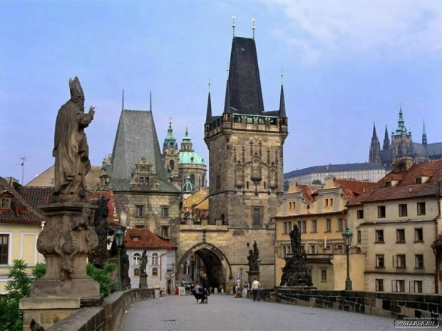

Страны
-
Австрия
- Баден
- Берванг
- Вена
- Гайнберг
- Зальцбугр
- Зёльден
- Кирхберг
- Линц
- Майрхофен
- Нойштифт
- Обертауэрн
- Санкт Мартинс
- Фибербрун
- Холфгартен
- Циллерталь
- Штирия
-
Германия
- Бавария
- Берлин
- Гамбург
- Гессен
- Дрезден
- Кёльн
- Киль
- Мюнхен
- Нюрнберг
- Саар
- Саксония
- Тюрингия
- Франкфурт-на-Майне
- Шлезвиг-Гольштейн
- Брно
- Карловы Вары
- Кутна-Гора
- Либерец
- Марианские Лазне
- Моравия
- Пардубице
- Прага
- Теплице
- Фримбург
- Чешский Крумлов
- Бретань
- Валь Торанс
- Гренобль
- Канны
- Лион
- Марсель
- Монако
- Ницца
- о.Корсика
- Париж
- Сен-Жерве
-
Испания
- Авила
- Алава
- Аликанте
- Альбасете
- Альмерия
- Астурия
- Бадахос
- Барселона
- Бургос
- Валенсия
- Гранада
- Ирун
- Канарские острова
- Коста Бланка
- Коста Брава
- Мадрид
- Майорка
- о.Ибица
- Севилья
Чехия
Франция
Чехия

Чешская Республика расположена на равнине, обрамленной со всех сторон венцом пограничных гор. Узкими речными долинами с востока, запада, севера и юга, сюда испокон веков вели торговые пути, пересекавшиеся в глубине страны.
Здесь на протяжении столетий переплетались истории наиболее известных европейских народов. В Чехии Вы найдете все архитектурные стили, представленные в исторических городах, крепостях и замках, памятники церковного зодчества, народную архитектуру, интересные коллекции в музеях.